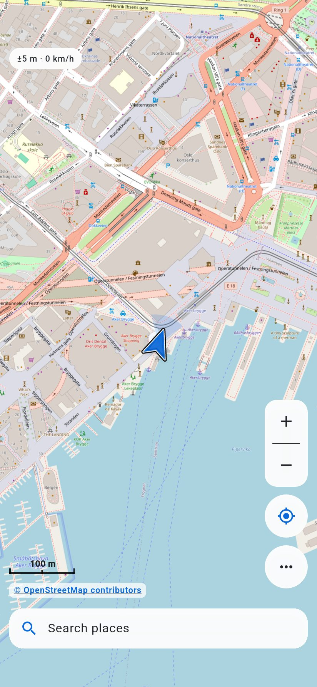
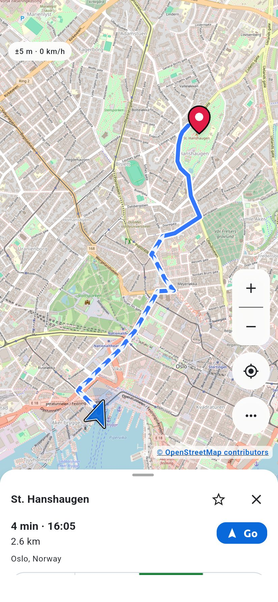
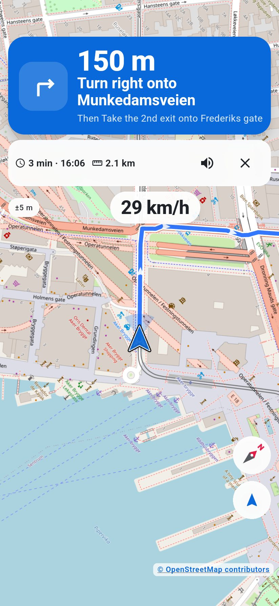
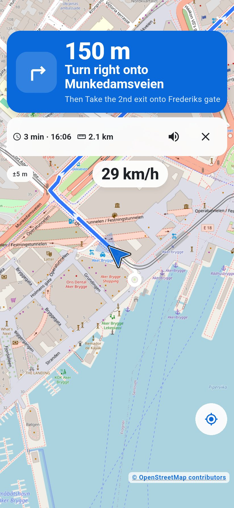
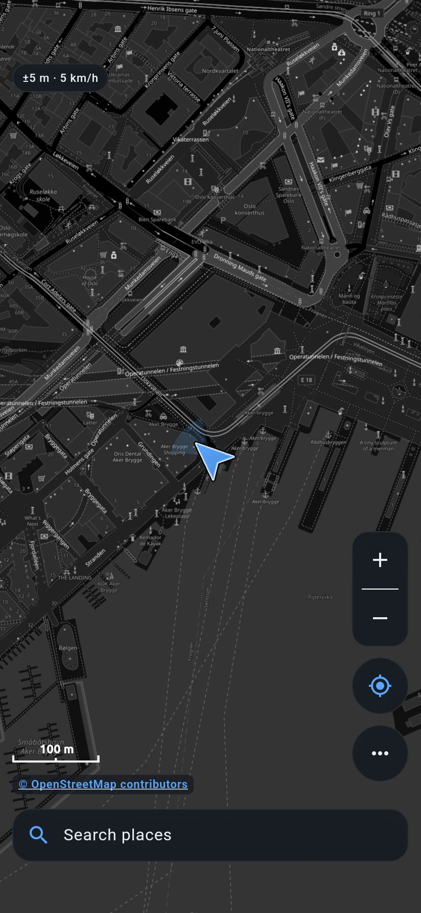
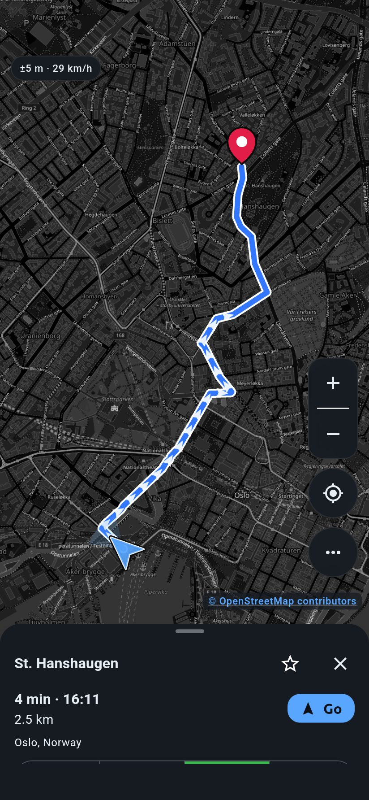
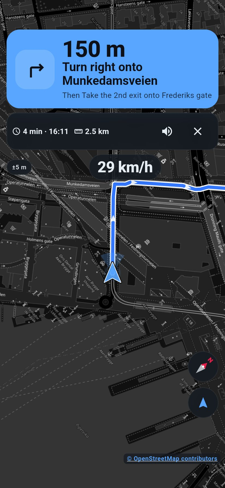
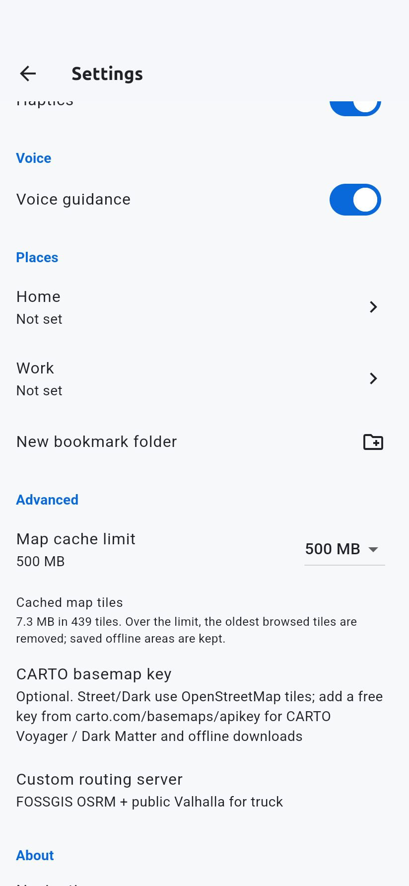

Android and Linux · early
A personal, phone-first maps and turn-by-turn app. It is still early, and some of the interface (including the compass) is being reworked.
Personal, experimental software. Nothing here is a finished product, and nothing was necessarily written or reviewed by a human unless it says so. Use it at your own risk.








Current Pages build: build-10 (version code 10), arm64-v8a.
On Android, Obtainium can install updates from a Standard JSON file. Add this URL:
https://raw.githubusercontent.com/isyourbrainfoss/navigation/gh-pages/version.jsonAdd in Obtainium (opens the app if it is already installed).
GitHub Release asset URLs often fail on phones with “Connection closed while receiving data”. Prefer the JSON mirror above.
SHA-256: 6d62326af3f6ac07de8acdba1d841472d6e54543df7500bc58e4f16c2a537e41
flatpak remote-add --if-not-exists --user navigation \
https://isyourbrainfoss.github.io/navigation/navigation.flatpakrepo
flatpak install --user navigation com.isyourbrainfoss.NavigationDefault setup uses OpenStreetMap, Photon search, and public OSRM/Valhalla routing — no API key required. Offline tiles can be downloaded; offline routing still needs a network or a local routing engine.